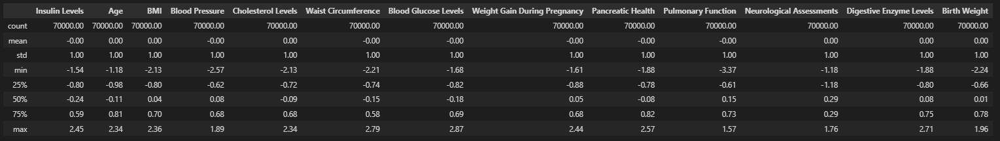

What is Clustering?
Clustering is an unsupervised learning technique used to group similar data points. We use three clustering methods:
- K-Means Clustering - Divides data into k-groups based on similarity.
- Hierarchical Clustering (HClust) - Builds a hierarchy of clusters.
- DBSCAN - Identifies clusters based on density and detects outliers.


GitHub Repository
View Clustering Code on GitHub ↗Dataset Used
We use the cleaned diabetes dataset for clustering. Below is a preview:
 Download Cleaned Dataset
Download Cleaned Dataset
Data Preprocessing Steps
1. Load the Dataset
The cleaned diabetes dataset is loaded before clustering.

2. Dropping Non-Numeric Columns
Only numerical features are retained for clustering.

3. Standardizing the Columns
StandardScaler is applied to normalize feature values.
K-Means Clustering
Below is the K-Means clustering visualization with the optimal number of clusters:

Silhouette Score Analysis
Silhouette Score was used to determine the best number of clusters.

Selected 3 Optimal k Values: [2, 3, 4]
K-Means on different cluster

Hierarchical Clustering
Hierarchical clustering dendrogram is shown below:

Hierarchical clustering using cosine similarity.
DBSCAN Clustering
DBSCAN clustering was applied to detect dense regions and outliers.

Performance Comparison
| Method | Performance | Scalability | Interpretability |
|---|---|---|---|
| K-Means | Fast & Efficient | Scalable | Good for spherical clusters |
| Hierarchical | Slower for large data | Less scalable | Useful for hierarchy |
| DBSCAN | Handles noise well | Not good for high dimensions | Great for irregular clusters |
Clustering Conclusion
K-Means Clustering:
- The silhouette score analysis helped identify the optimal number of clusters, with three clusters performing well.
- The 2D PCA projection of K-Means clustering shows well-separated groups, indicating effective partitioning.
- The method works well for spherical clusters but may struggle with more complex, non-linear structures.
Hierarchical Clustering:
- The dendrogram visualization indicates the hierarchical relationships between data points.
- Using cosine similarity improved cluster separation compared to Euclidean distance.
- However, hierarchical clustering is computationally expensive for large datasets and may not scale efficiently.
DBSCAN Clustering:
- DBSCAN effectively identifies dense clusters and outliers, making it suitable for datasets with varying density.
- The presence of outliers (noise points labeled as -1) indicates that the dataset contains regions of lower density.
- However, parameter tuning (epsilon and min_samples) is crucial for obtaining meaningful clusters.
Overall Insights:
- K-Means is efficient for well-separated, compact clusters but struggles with varying density.
- Hierarchical Clustering provides interpretability but is computationally expensive for large datasets.
- DBSCAN handles noise and irregular cluster shapes well but requires careful parameter selection.
- Each clustering method has its strengths and limitations, and the choice of technique depends on dataset characteristics and the problem at hand.